Binmatter
Lead designer
Visual identity, web design, design system
2025
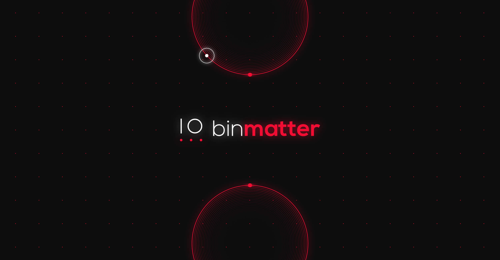
Project overview
Binmatter was founded in 2012, and since then, its image had not been updated, until 2018 when I was assigned this project. The company decided to bring its brand up to date by redesigning the whole visual identity.
We wanted to convey the company’s tech savvy vibes; retaining a somewhat of a "nerdy" attitude while being professional. With keeping the original essence of the business, I transformed the old image into something more vibrant with geometrical elements and vibrant colors.
Logo
Giving the brand a new look
I first looked at the logo; my boss wanted to keep the original concept of the icon of four circles and one line, which represent binary numbers. I started playing around with these elements, trying different variations. I had no deadline for this project, therefore I had the flexibility to create many options. Because of this, I additionally designed different icons to brainstorm more options.
I wanted to give it a more organic look and take away the ‘boxy’ feel of it. This was primarily contributed to the typography. I already knew I wanted to try out a round sans font to bring it into the modern tech world. I ended up choosing “Nexa Bold” and "Nexa Light", using both distinct fonts weights to create contrast.
In general, I tried to showcase a more tech vibe with new bright colors and elements representing circuits such as dots, lines, squares and computers.
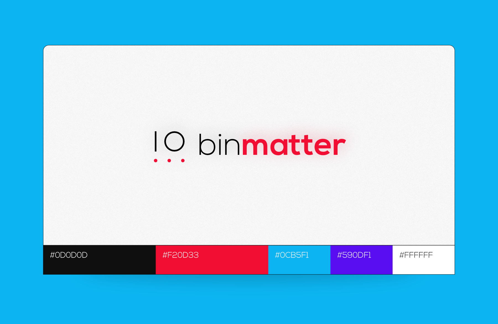
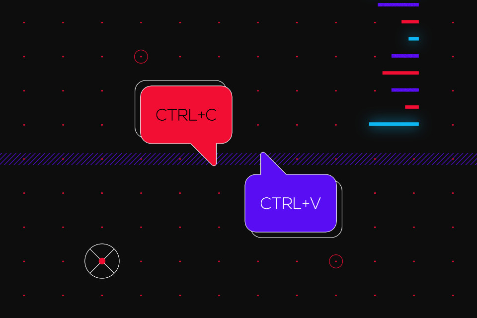
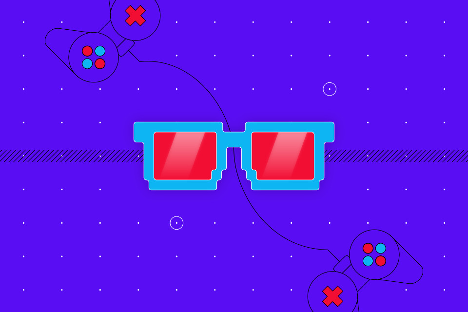
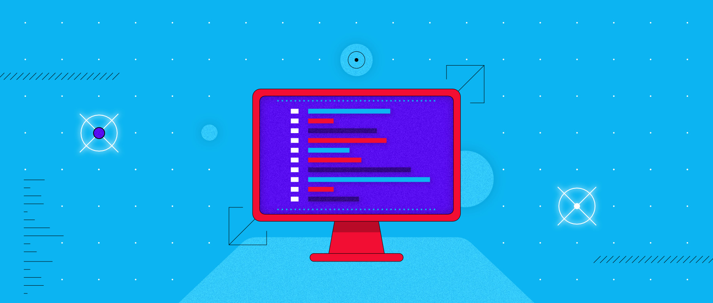
Website
Paragraph goes here
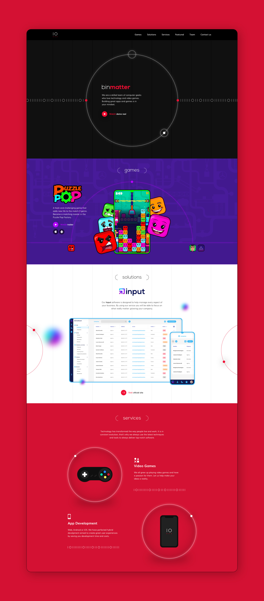
Social media
Paragraph goes here
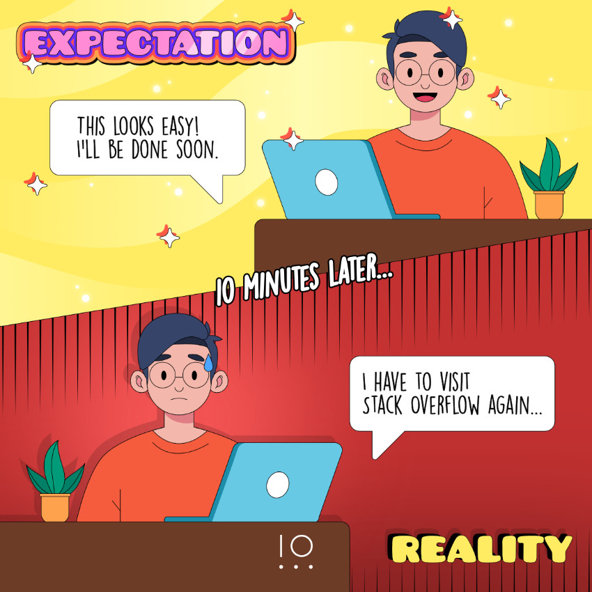
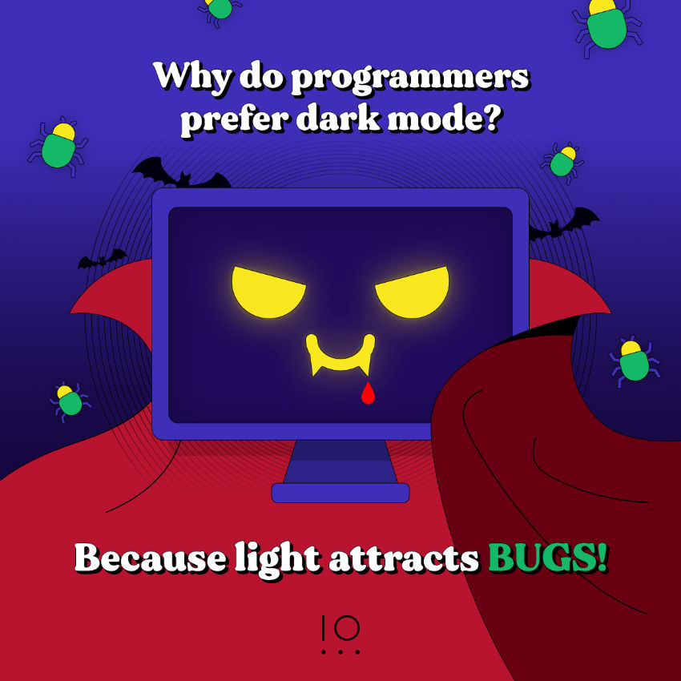
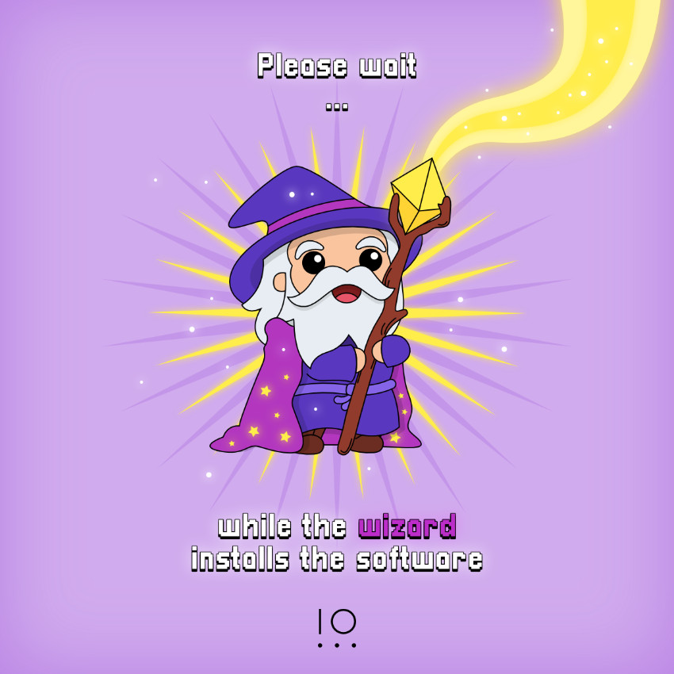
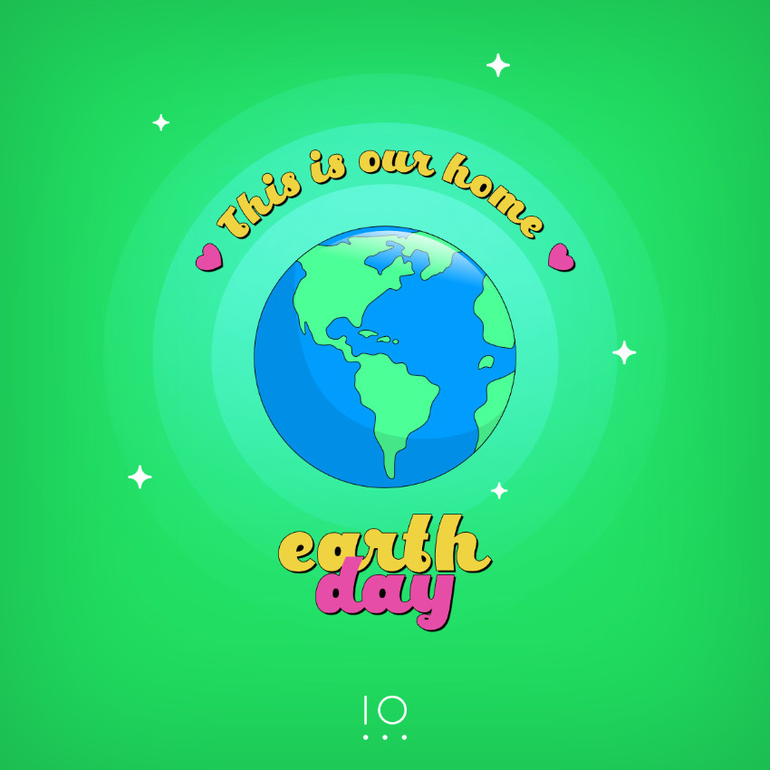
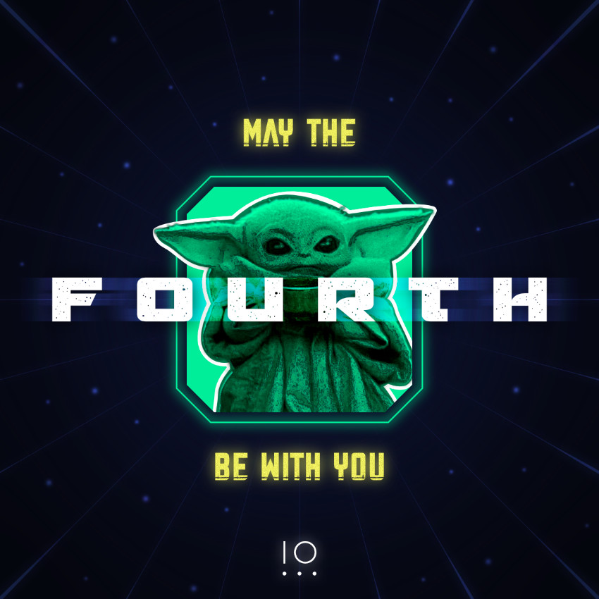
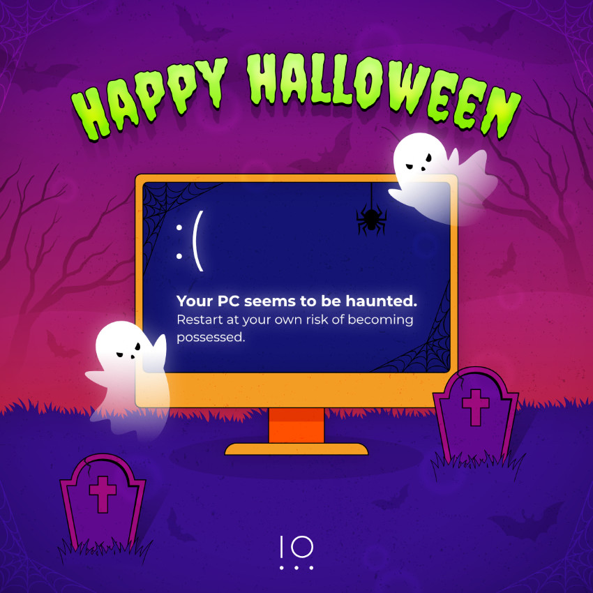
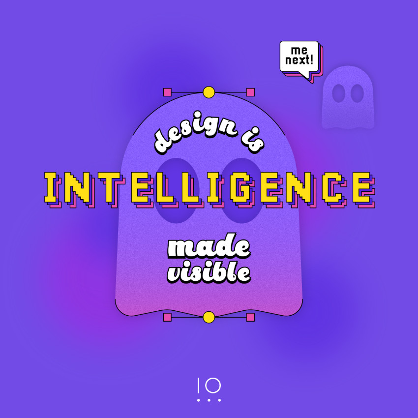
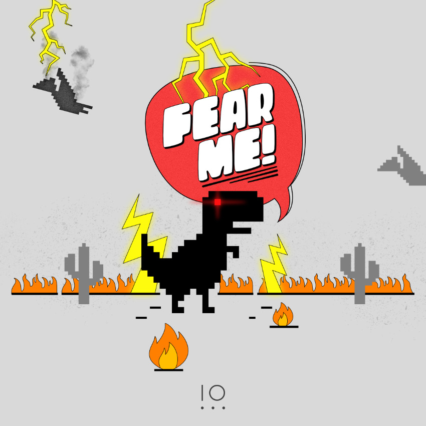